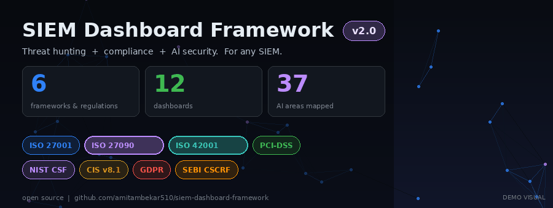
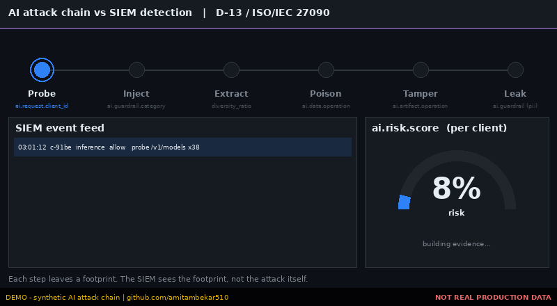
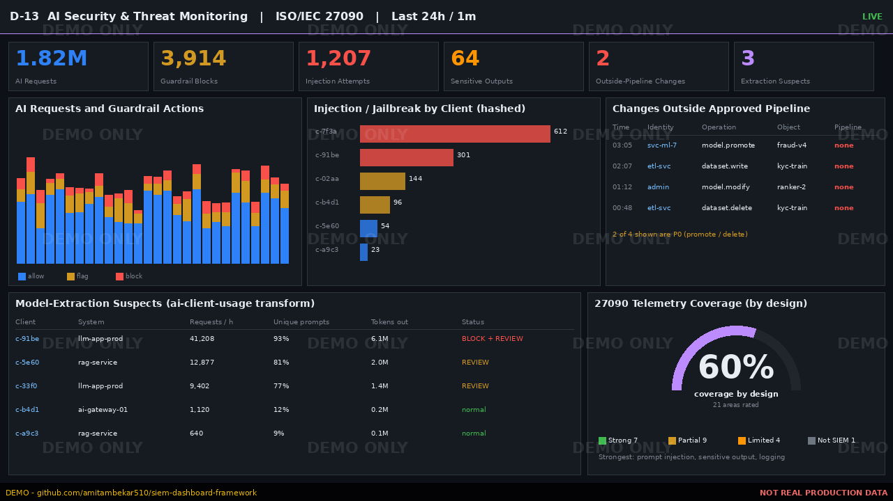
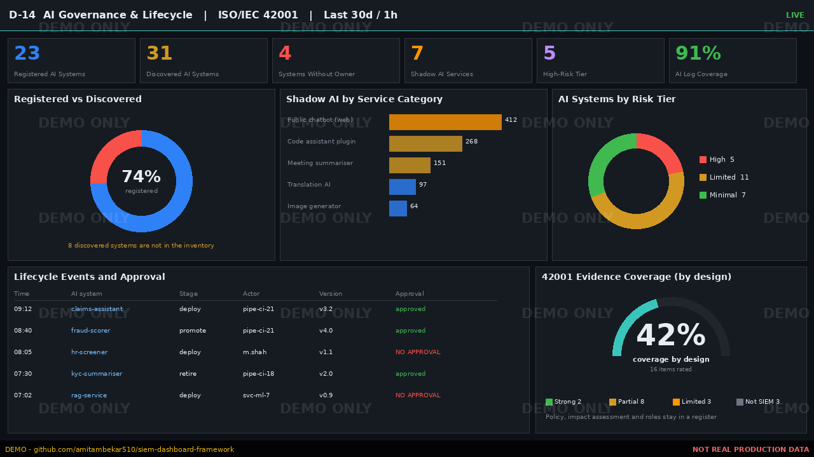
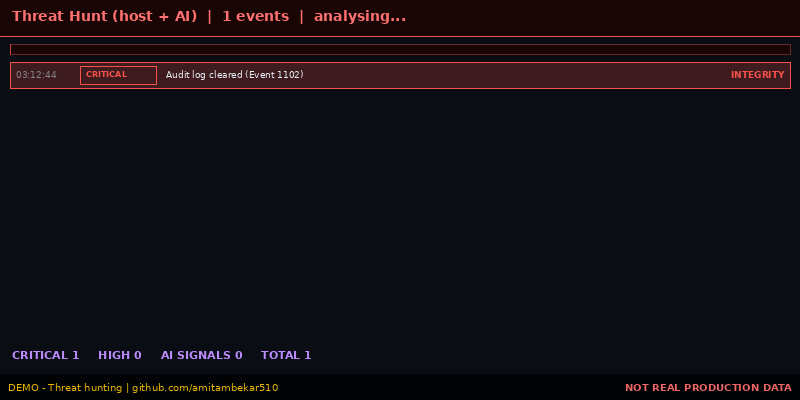

14 vendor-neutral dashboards, 8 frameworks and regulations, including the new ISO/IEC 27090 (AI security) and ISO/IEC 42001 (AI management). Works with Elastic, Splunk, Sentinel, QRadar and Wazuh.
Browse 14 dashboardsAI security & governanceGitHub repo3 ISO/IEC standards, 3 industry standards / frameworks and 2 regulatory frameworks. MITRE ATT&CK is used as a threat-mapping reference and is not counted.
Each has an audience, purpose, data sources, refresh and priority. D-13 and D-14 are new.
A SIEM cannot prove everything in either standard, but with the right telemetry it evidences a lot. The framework says clearly where it cannot.



Host and AI signals ranked by priority, so analysts stop pivoting across tools.
| Priority | Signal | Query | Source |
|---|---|---|---|
| P0 | Audit log cleared | winlog.event_id: 1102 | Windows |
| P0 | Root-level operations | auditd.log.EUID: "0" | Linux |
| P0 | Privileged group change | winlog.event_id: (4732 OR 4756) | Windows |
| P0 | New service installed | winlog.event_id: 7045 | Windows |
| P0 | Model artifact modified outside pipeline | ai.artifact.operation: ("modify" OR "promote") AND NOT ai.pipeline.id: * | AI |
| P0 | Sensitive data in model output | ai.guardrail.category: ("pii" OR "secrets") AND ai.guardrail.action: ("redact" OR "flag") | AI |
| P1 | Shared / unattributed account | auditd.log.AUID: "4294967295" | Linux |
| P1 | Brute force | auditd.log.success: "no" OR winlog.event_id: 4625 | Both |
| P1 | Scheduled task created | winlog.event_id: 4698 | Windows |
| P1 | Sensitive path access | auditd.log.key: DPIA_* | Linux |
| P1 | Training dataset written outside pipeline | ai.data.operation: ("write" OR "delete") AND NOT ai.pipeline.id: * | AI |
| P1 | Prompt-injection burst per client | ai.guardrail.category: ("prompt_injection" OR "jailbreak") | AI |
| P1 | Model-extraction pattern | ai.request.type: "inference" (aggregate per ai.request.client_id: volume + unique prompt_hash) | AI |
| P2 | Shadow AI usage | ai.shadow.detected: true | AI |
| P2 | Rule-triggered failure | event.outcome: "failure" AND rule.name: * | Both |

Building compliance-grade SIEM dashboards for regulated financial organisations in Mumbai. This framework is the outcome of a real long-term SOC engagement, generalised for any SIEM.
GitHub profileThis repository